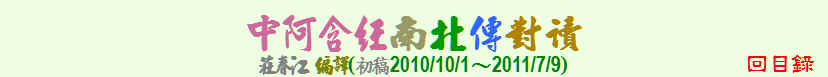

| 教理 | 觀念 | 生活 | 實踐 | 事蹟 | 譬喻 | 其它 |
| 八聖道的內容 | 不對白衣說的法 | 不諍論 | 六十二界 |
| 六界非我 | 六根的運作 | 世間的集滅 | 只有苦與苦滅 |
| 四種食物營養 | 正見的內容 | 正見為先導 | 生命的緣起 |
| 見緣起便見法 | 苦集滅道 | 執取定境往生 | 常我見的內容 |
| 惡之根本 | 渴愛的食物 | 無我 | 業報的原理 |
| 緣起的內容 | 諸行無常 | 斷慢證解脫 | 識名色輾轉相依 |
| 八關齋戒 | 十不善業 | 不持咒問卜 | 不要怕作福 |
| 不要故意說謊 | 不要為他人行惡 | 不要貪求物質 | 不要樂於聚會 |
| 不離自己的境界 | 心靈的沐浴 | 出家在家之苦樂 | 四攝 |
| 布施的要領 | 布施得福 | 生氣的害處 | 在家人的布薩 |
| 自利利他 | 自我推量反省 | 佛陀的威儀 | 依行為檢證 |
| 兩面贏家 | 怨恨不息怨恨 | 施與僧團 | 倫理與理財 |
| 討論的原則 | 探病 | 淫慾障道 | 福壽等之道 |
| 福德之源 | 選擇依住處 | 轉輪王的福報因緣 |